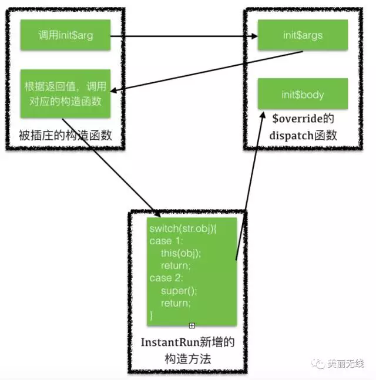

介绍
Instant Run是android studio2.0新增的一个运行机制，在你编码开发、测试或debug的时候，它都能显著减少你对当前应用的构建和部署的时间。它的一个重要特点是即时生效，一般不需要重启。
三种方式
instant-run加载更新代码有三种方式：hotswap、coldswap、warmswap。
* hotswap
如果只是改动现有方法的逻辑，instant-run会自动应用hotswap，不需要任何重启就可以看到实际改动
* warmswap
当改变的不止是代码，还涉及到资源文件的变动，就做不到像hotswap一样在不影响当前Activity的情况下应用变动了。AS会生成一个新的resources._ap推到设备上，然后重启当前Activity来使新的资源生效。
* coldswap
如果不符合上面hotswap和warmswap的条件，比如说增加或者删减了方法、修改了类的集成关系、修改了AndroidManifest等，就会应用coldswap。也就是把改动部分推送到设备上，然后会重启整个app才能看到变动。
hotswap分析
Instant Run在第一次构建apk时，会在每一个方法进行插桩
//源代码
public class MainActivity extends AppCompatActivity {
private TextView mTv;
private int count;
public int count2;
@Override
protected void onCreate(Bundle savedInstanceState) {
super.onCreate(savedInstanceState);
setContentView(R.layout.activity_main);
mTv = findViewById(R.id.textView);
mTv.setText("hello world");
}
private void toBeFix() {
Toast.makeText(this, "I'm a bug", Toast.LENGTH_SHORT).show();
testPublic();
testPrivate();
}
public void testPrivate() {
count = 2;
}
public void testPublic() {
count2 = 3;
}
}
instant run插桩后的代码
public class MainActivity extends AppCompatActivity {
private TextView mTv;
private int count;
public int count2;
public static final long serialVersionUID = -754549888626914089L;
public static volatile transient com.android.tools.ir.runtime.IncrementalChange $change;
//原有的构造函数
public MainActivity() {
IncrementalChange var1 = $change;
if (var1 != null) {
Object[] var10001 = (Object[])var1.access$dispatch("init$args.([Lcom/example/myapplication/MainActivity;[Ljava/lang/Object;)Ljava/lang/Object;", new Object[]{null, new Object[0]});
Object[] var2 = (Object[])var10001[0];
this(var10001, (InstantReloadException)null);
var2[0] = this;
var1.access$dispatch("init$body.(Lcom/example/myapplication/MainActivity;[Ljava/lang/Object;)V", var2);
} else {
super();
this.count = 0;
}
}
public void onCreate(Bundle savedInstanceState) {
IncrementalChange var2 = $change;
if (var2 != null) {
var2.access$dispatch("onCreate.(Landroid/os/Bundle;)V", new Object[]{this, savedInstanceState});
} else {
super.onCreate(savedInstanceState);
this.setContentView(R.layout.main);
this.mTv = (TextView)this.findViewById(R.id.textView);
this.mTv.setText("hello world");
}
}
private void toBeFix() {
IncrementalChange var1 = $change;
if (var1 != null) {
var1.access$dispatch("toBeFix.()V", new Object[]{this});
} else {
Toast.makeText(this, "I'm a bug", 0).show();
this.testPublic();
this.testPrivate();
}
}
public void testPrivate() {
IncrementalChange var1 = $change;
if (var1 != null) {
var1.access$dispatch("testPublic.()V", new Object[]{this});
} else {
this.count = 2;
}
}
public void testPublic() {
IncrementalChange var1 = $change;
if (var1 != null) {
var1.access$dispatch("testPrivate.()V", new Object[]{this});
} else {
this.count2 = 3;
}
}
//instant run增加的构造方法，为了要调用父类的构造函数以及本类的其他构造函数
MainActivity(Object[] var1, InstantReloadException var2) {
String var3 = (String)var1[1];
switch(var3.hashCode()) {
case -212194855:
super();
return;
case 69102765:
this();
return;
case 2011923530:
super(((Number)var1[2]).intValue());
return;
default:
throw new InstantReloadException(String.format("String switch could not find '%s' with hashcode %s in %s", var3, var3.hashCode(), "com/example/myapplication/MainActivity"));
}
}
}
$change初始值为null，这时方法的行为被没有被修改。当$change不为null时，MainActivity的所有方法都被代理到了$change的access$dispatch方法上，从而有了修复原有逻辑的基础，就是让原有逻辑短路，直接跳到另外一个地方执行新的逻辑。
$change是IncrementalChange接口类型，里面只定义了一个access$dispatch方法。
package com.android.tools.ir.runtime;
public interface IncrementalChange {
Object access$dispatch(String var1, Object... var2);
}
$change的具体实现，可以在app/intermediates/transforms/transforms/instantRun目录下找到
原类名 + $override，实现IncrementalChange接口。该类包含被修复的逻辑，取名$override，意思是要取代原有类。
public class MainActivity$override implements IncrementalChange {
public MainActivity$override() {
}
public static Object init$args(MainActivity[] var0, Object[] var1) {
Object[] var2 = new Object[]{new Object[]{var0, new Object[0]}, "androidx/appcompat/app/AppCompatActivity.()V"};
return var2;
}
public static void init$body(MainActivity $this, Object[] var1) {
AndroidInstantRuntime.setPrivateField($this, new Integer(1), MainActivity.class, "count");
}
public static void onCreate(MainActivity $this, Bundle savedInstanceState) {
Object[] var2 = new Object[]{savedInstanceState};
MainActivity.access$super($this, "onCreate.(Landroid/os/Bundle;)V", var2);
$this.setContentView(R.layout.main);
AndroidInstantRuntime.setPrivateField($this, (TextView)$this.findViewById(R.id.textView), MainActivity.class, "mTv");
((TextView)AndroidInstantRuntime.getPrivateField($this, MainActivity.class, "mTv")).setText("hello world");
}
public static void toBeFix(MainActivity $this) {
Toast.makeText($this, "I'm fixed", 0).show();
$this.testPublic();
$this.testPrivate();
}
public static void testPrivate(MainActivity $this) {
AndroidInstantRuntime.setPrivateField($this, new Integer(2), MainActivity.class, "count");
}
public static void testPublic(MainActivity $this) {
$this.count2 = 3;
}
@override
public Object access$dispatch(String var1, Object... var2) {
//根据方法名hashCode，分发调用对应的方法
switch(var1.hashCode()) {
case 1189276834:
testPublic((MainActivity)var2[0]);
return null;
case 1310942360:
testPrivate((MainActivity)var2[0]);
return null;
case -909773794:
toBeFix((MainActivity)var2[0]);
return null;
case -641568046:
onCreate((MainActivity)var2[0], (Bundle)var2[1]);
return null;
case 707796331:
init$body((MainActivity)var2[0], (Object[])var2[1]);
return null;
case 1546073223:
return init$args((MainActivity[])var2[0], (Object[])var2[1]);
default:
throw new InstantReloadException(String.format("String switch could not find '%s' with hashcode %s in %s", var1, var1.hashCode(), "com/example/myapplication/MainActivity"));
}
}
}
构造方法问题
Instant Run为了在xxx$override类中调用原有类的super()方法和 this()方法，会在原有类中增加一个构造方法。然后在xxx$override类中会生成两个方法args和bodys，args返回一个字符串，代表要调用哪个this或super方法，bodys中则是原来构造函数中的除this或super调用的其他逻辑。当一个类的构造方法被HotFix时，在它的构造方法中会先调用xxx$override类的args，将args返回的字符串传递给新生成的构造方法，在新生成的构造方法里会根据字符串决定要调用哪个函数，之后再调用body方法初始化其他逻辑。

权限问题
因为要在xxx$override类的对象中去访问原有类的属性、方法，所以必定会涉及到访问权限问题。 1、Instant Run会在编译期间将原有类所有的非public访问权限的方法改为public。 1、对于非public访问权限的成员变量，Instant Run通过运行时反射访问原类的成员变量。
patch文件如何上传到app里的？
apk第一次编译时，编译器会把instant-run.jar打包到主dex中
instant-run.jar在app/build/intermediates/incremental-runtime-classes/debug目录下可以找到，主要包含了2个方面的代码：
* App Server，接收patch推送
* 修复逻辑
Instant run在Gradle 2.0 ~ 2.3 ~ 3.0版本都有不同的改动，但核心逻辑没变，这里以Gralde3.x版本为例。 找到构建完的apk，发现manifest.xml中多了一个provider组件 可以在instant-run.jar中找到这个组件的代码
public final class InstantRunContentProvider extends ContentProvider {
public boolean onCreate() {
if (isMainProcess()) {
Log.i("InstantRun", "starting instant run server: is main process");
Server.create(getContext());
} else {
Log.i("InstantRun", "not starting instant run server: not main process");
}
return true;
}
//...其他没有营养的逻辑
我们知道ContentProvider的onCreate的调用时机介于Application的attachBaseContext和onCreate之间，也就是说，provider的onCreate会在应用启动时自动被调用。
InstantRunContentProvider在其onCreate方法中就做了一件事，就是启动一个server。
public class Server{
public static Server create(Context context) {
return new Server(context.getPackageName(), context);
}
private Server(String packageName, Context context) {
this.context = context;
try {
//以packageName作为名字新建LocalServerSocket
this.serverSocket = new LocalServerSocket(packageName);
} catch (IOException e) {
Log.e("InstantRun", "IO Error creating local socket at " + packageName, e);
return;
}
//启动server
startServer();
}
private void startServer() {
try {
Thread socketServerThread = new Thread(new SocketServerThread(this, null));
//在独立线程中启动socket，并处理相应socket请求。
socketServerThread.start();
} catch (Throwable e) {
}
}
//...
//处理socket请求数据
private void handle(DataInputStream input, DataOutputStream output) throws IOException {
int message;
int version = input.readInt();
output.writeInt(4);
if (version != 4) {
Log.w("InstantRun", "Mismatched protocol versions; app is using
version 4 and tool is using version " + version);
return;
}
while (true) {
//...
List<ApplicationPatch> changes;
message = input.readInt();
switch (message) {
case 1:
//从socket读出changes列表
changes = ApplicationPatch.read(input);
hasResources = Server.hasResources(changes);
updateMode = input.readInt();
//处理changes
updateMode = Server.this.handlePatches(changes, hasResources, updateMode);
//根据updateMode(更新方式)，比如重启当前activity或重启app
Server.this.restart(updateMode, hasResources, showToast);
continue;
//其他case
}
}
}
//处理patch
private int handlePatches(List<ApplicationPatch> changes, boolean hasResources, int updateMode) {
if (hasResources) {
FileManager.startUpdate();
}
for (ApplicationPatch change : changes) {
String path = change.getPath();
if (path.equals("classes.dex.3")) {
//处理热交换patch
updateMode = handleHotSwapPatch(updateMode, change); continue;
} if (isResourcePath(path)) {
//处理资源patch
updateMode = handleResourcePatch(updateMode, change, path);
}
}
if (hasResources) {
FileManager.finishUpdate(true);
}
return updateMode;
}
private int handleHotSwapPatch(int updateMode, ApplicationPatch patch) {
try {
//把patch数据写入dex文件
String dexFile = FileManager.writeTempDexFile(patch.getBytes());
String nativeLibraryPath = FileManager.getNativeLibraryFolder().getPath();
//使用DexClassLoader加载patch(dex)
DexClassLoader dexClassLoader = new DexClassLoader(dexFile,
this.context.getCacheDir().getPath(),
nativeLibraryPath, getClass().getClassLoader());
//加载类AppPatchesLoaderImpl
Class<?> aClass = Class.forName("com.android.tools.ir.runtime.AppPatchesLoaderImpl",
true, dexClassLoader);
try {
if (Log.isLoggable("InstantRun", 2)) {
Log.v("InstantRun", "Got the patcher class " + aClass);
}
//实例化AppPatchesLoaderImpl
PatchesLoader loader = (PatchesLoader) aClass.newInstance();
//调用AppPatchesLoaderImpl的load()方法，加载热修复逻辑
if (!loader.load()) {
updateMode = 3;
}
} catch (Exception e) {
e.printStackTrace();
updateMode = 3;
}
} catch (Throwable e) {
updateMode = 3;
}
return updateMode;
}
//其他逻辑
}
从上面的代码可知，AppPatchesLoaderImpl类是靠加载patch的classLoader加载的。实际推送到设备上的patch为app/intermediates/reload-dex/classes.dex，里面有两个类，一个类是上面已经说过的MainActivity$override，另一个类就是AppPatchesLoaderImpl，作用是指明哪些类需要patch。
public class AppPatchesLoaderImpl extends AbstractPatchesLoaderImpl {
public static final long BUILD_ID = 1571577597897L;
public AppPatchesLoaderImpl() {
}
public String[] getPatchedClasses() {
//罗列哪些类需要被patch
return new String[]{"com.example.myapplication.MainActivity"};
}
}
看来load方法是在其父类AbstractPatchesLoaderImpl中，我们在instant-run.jar的runtime下找到了。
public abstract class AbstractPatchesLoaderImpl implements PatchesLoader {
private final Method get = java.util.concurrent.atomic.AtomicReference.class.getMethod("get", new Class[0]);
private final Method set = java.util.concurrent.atomic.AtomicReference.class.getMethod("set", new Class[]{Object.class});
public abstract String[] getPatchedClasses();
public boolean load() {
//遍历需要修复的类
for (String className : getPatchedClasses()) {
try {
ClassLoader cl = getClass().getClassLoader();
//加载对应被修复的$override类
Class<?> aClass = cl.loadClass(className + "$override");
//实例化
Object o = aClass.newInstance();
//加载原类class
Class<?> originalClass = cl.loadClass(className);
//定位原类的静态成员$change
Field changeField = originalClass.getDeclaredField("$change");
changeField.setAccessible(true);
//将实例化的$override赋值给$change，这里根据原类是是否是接口，逻辑有点不同
Object previous = originalClass.isInterface() ?
patchInterface(changeField, o) : patchClass(changeField, o);
//...
} catch (Exception e) {
//...
return false;
}
}
return true;
}
private Object patchInterface(Field changeField, Object patch) {
Object atomicReference = changeField.get(null);
Object previous = this.get.invoke(atomicReference, new Object[0]);
this.set.invoke(atomicReference, new Object[]{patch});
return previous;
}
private Object patchClass(Field changeField, Object patch) {
Object previous = changeField.get(null);
changeField.set(null, patch);
return previous;
}
}
到这里，看到$change变量被赋值为$change对象，我们就知道热修复逻辑完成了。
总结
完整的过程可以概述为：
- 在第一次完整编译的时候给所有的类插桩，使它们的方法能被代理
- app启动时启动一个AppServer，等待Android Studio推送增量包
- 代码改动后的增量编译中，通过gradle插件生成包含了改动代码的代理类$change
- Android Studio将patch推送到app中，然后给被改动的类的
$change字段赋值，这样所有方法都转发到了代理类
//todo 资源修复